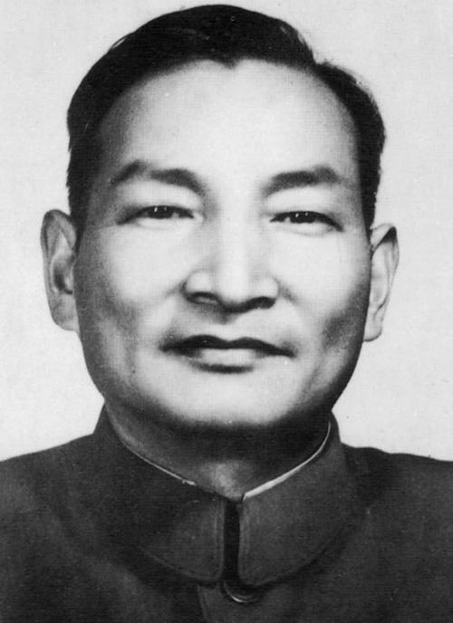

陈云
陈云（1905—1995），上海人，中国共产党重要领导人之一，杰出的政治家、经济工作专家和革命家，为新中国建设和发展作出了卓越贡献。
陈云以严谨的工作作风、廉洁自律和坚定的理想信念著称，积极推动国家经济建设和社会发展，为党和人民的事业提供了坚实保障。
在家庭生活中，他注重勤俭持家、教育子女诚信守法、培养责任感，强调个人品德与社会责任紧密结合，形成了良好的家风传承。
陈云的家风和革命精神，为上海及全国红色教育提供了宝贵榜样。他的事迹激励后人坚持理想信念，为国家建设和民族团结不懈努力。
← 返回中国地图